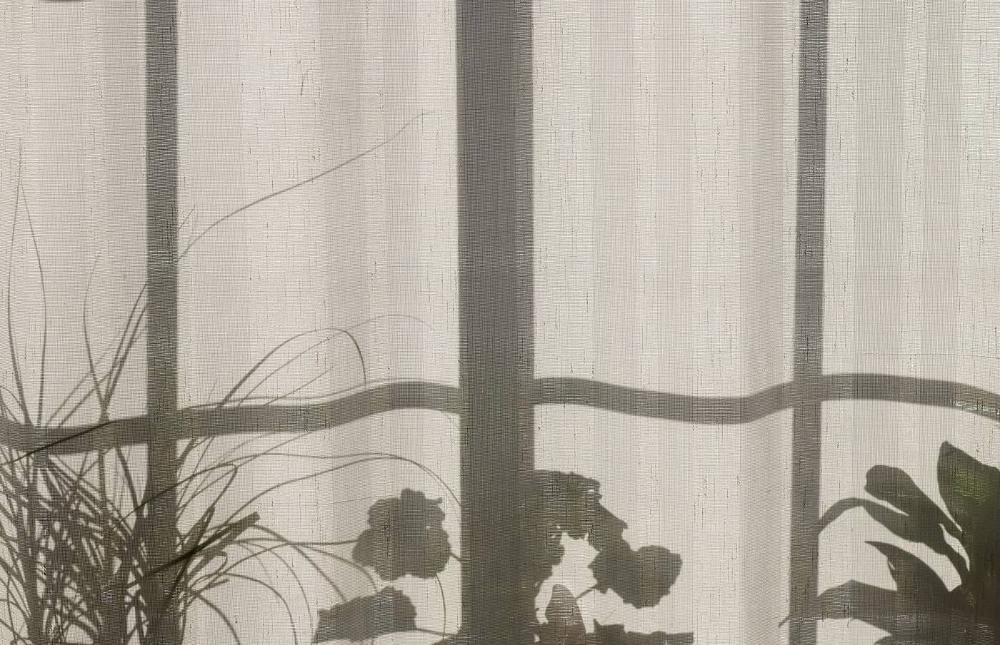

制作側の連想
吹き流しの部位を、配置図にしてみる
このサイトは、ポールの先で風を受ける吹き流しを図にしたつもりで作りました。六つの部位に番号をふり、上の図と並べています。制作側の連想で、お店の理念・由来とは無関係です。実際の製品の仕様を示すものでもありません。
凡例
六つの部位
- 1口輪風を受け入れる先端の、金属の輪。
- 2袋体風をはらんでふくらむ、筒状の布。
- 3後端の開口空気が抜けていく、細いほうの口。
- 4回転金具風の向きに合わせて袋体が回るための継ぎ手。
- 5支持アーム袋体をポールから離して支える腕。
- 6ポール全体を立てておくための支柱。
ギャラリー(イメージ)
写真の帖


写真はフリー素材のイメージです。お店のものではなく、お店で提供している商品を示すものでもありません。



写真はイメージです。お店のものではありません。
ご案内
お店のこと(確認できたものだけ)
| 所在地 | 〒292-0421 千葉県君津市久留里市場585 |
|---|---|
| 電話 | 準備中 |
| 営業時間 | 準備中 |
| 定休日 | 準備中 |
| ご予約 | 準備中 |
| 駐車場 | 準備中 |
| SNS | Instagram @cafe_tabiwo_suruki |